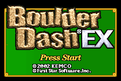

Boulder Dash EX (USA)
EEPROM 4K Save Format Mapped (Family Spec) 🎮 Button Cheat 💾 MultiBoot 🎮 4P Link
Cartridge Identity
- Game Code
ABDE(FamilyABD)- Header Title
B-DASH EX- Maker / Revision
7F/ rev0- ROM Size
- 4.0 MiB (4,194,304 B)
- Save Media
EEPROM 4K- SHA-256
ffaabce2401a54dc4e454893a8ce831c81fa1e2d6c0404ceb29e8c620a813dde
Verified Button-Combo Cheat
Zero-patch retail controller cheat (Wave 3): 4-way counterfactually verified in headless
libmgba. See all verified titles in the Button-Combo Cheats Catalog.
- Effect
- Hidden Controller Sequence Unlock (ROM table 0x080919fc)
- Button Sequence
DOWN, RIGHT, A, B, SELECT, START, LEFT, UP, R, L- Verification Verdict
- Visual + RAM Unique Reaction
- Target RAM Address
0x03000C8C- ROM Table Address
0x080919fc- Timing Protocol
boot=540f,hold=6f,release=6f,settle=60f- Activation Indicator
- Headless libmgba 4-way counterfactual verified: unique 240x160 framebuffer and RAM/VRAM state transition distinct from control, wrong, and reversed inputs
gbakit cheat verify ABDE
Link Cable & Multiplayer Communications
This title contains detected communication capabilities: 💾 MultiBoot 🎮 4P Link.
Detailed protocol specifications, SIO registers, Joybus commands, and MultiBoot sequences are documented in the Link & Multiplayer Reference.
- Multi-Player SIO (4P)
- 16-bit ring network · SIOCNT (
0x04000128) literals:0x05b0e0,0x05b6cc,0x05dfb8· SIODATA32/SIOMULTI0 (0x04000120) literals:0x05e514,0x05e67c,0x05e6e0 - Single-Cart MultiBoot
- Single-Cartridge MultiBoot (Download Play) client/server handler · Thumb SWI 0x25 (
0xDF25):0x05ef9e,0x1f367e,0x20181e,0x235d74
Battery Save Format Specification (Family Shared)
This release shares its save architecture with canonical family reference Boulder Dash EX (Europe) (En,Fr,De) (Family
ABD).
Open Family Save Format Spec (ABDP)Download save-format.json
- Canonical Specification
ABDP· 11 mapped fields · 1 verified checksum(s) · Confidence: MEDIUM- gbakit Built-In Support
- Built-in (ABDP)
gbakit save verify ABDP save.sav
gbakit save decode ABDP save.sav
gbakit save fix ABDP damaged.sav -o repaired.savObserved Battery Save Layout
- Fill Byte & Active Size
0x00fill · 50–50 / 512 B active (entropy 3.76 bits/B)- Active Offset Ranges
0x0–0xB,0xF,0x12–0x1F,0x26–0x27,0x2B,0x37,0x1CB,0x1D0–0x1D8, +6 more (14 total)- ASCII Magic / Headers
E HSAD-BDBA/,00-E- Observed Variable Regions
- 0 bytes across 0 spans: None
- Candidate Checksum/Counter Spans
- None
Text, Fonts & Scene Data
- Primary Text Encoding
- Plain ASCII (uncompressed) (
1,129ASCII strings) - Font & VWF Indicators
- No VWF Table 1bpp Font · BIOS SWIs: BitUnPack
0x10:25· LZ770x11/12:29· Huffman0x13:6· RLE0x14/15:17 - Scene & Packaging
22ROM pointer tables (≥32 entries,3≥200) ·0relativeu32TOCs ·113OAM metasprite hits
Hardware MMIO Subsystems
ppu_display0x8000a18,0x8000c4c,0x8001500,0x8001948,0x80019c0,0x8001a14,0x8001a34,0x8001bc4,0x800285c,0x8003004(+4 more)
Regional Variants & Revisions (Family ABD)
- Boulder Dash EX (Europe) (En,Fr,De) (
ABDP, 4 MiB) - Boulder Dash EX (Japan) (
ABDJ, 4 MiB)